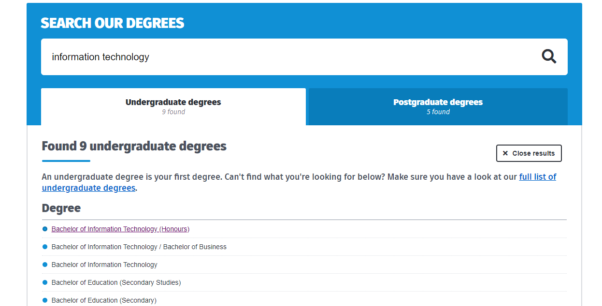
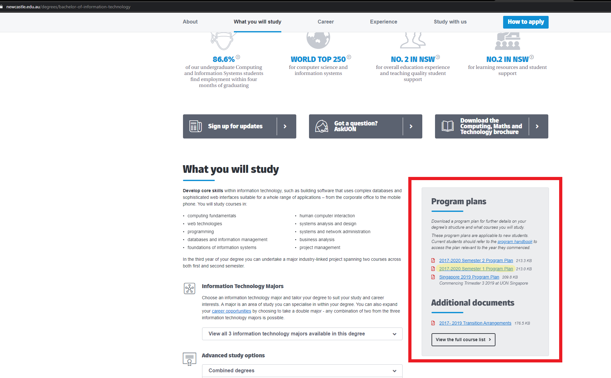
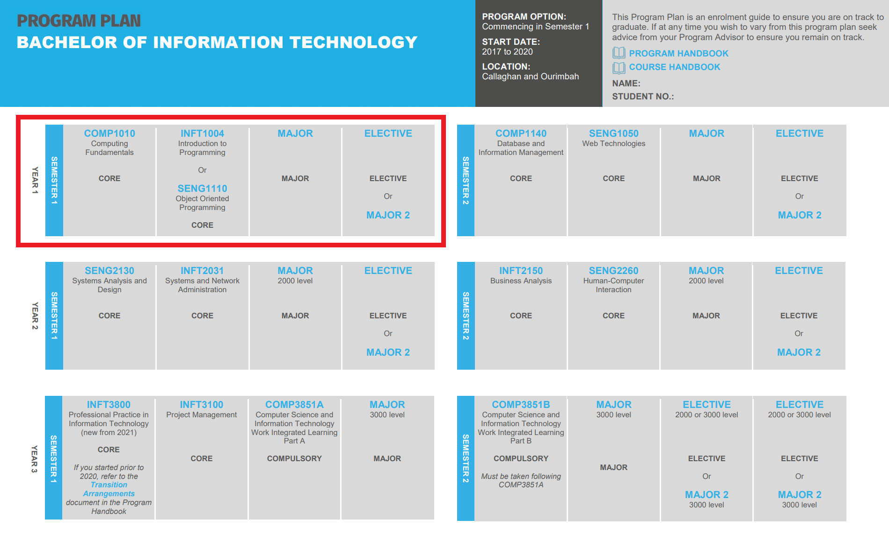
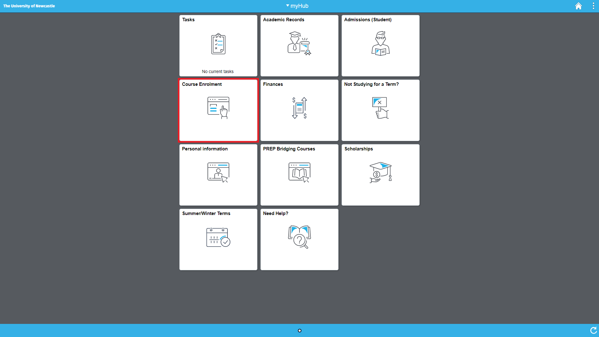
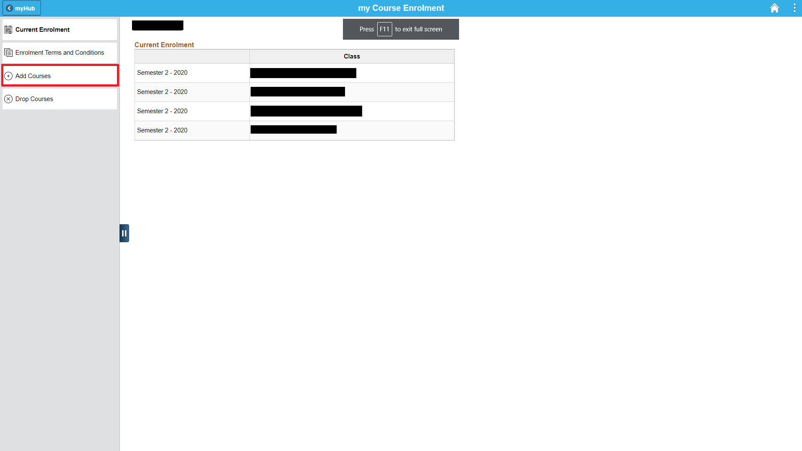
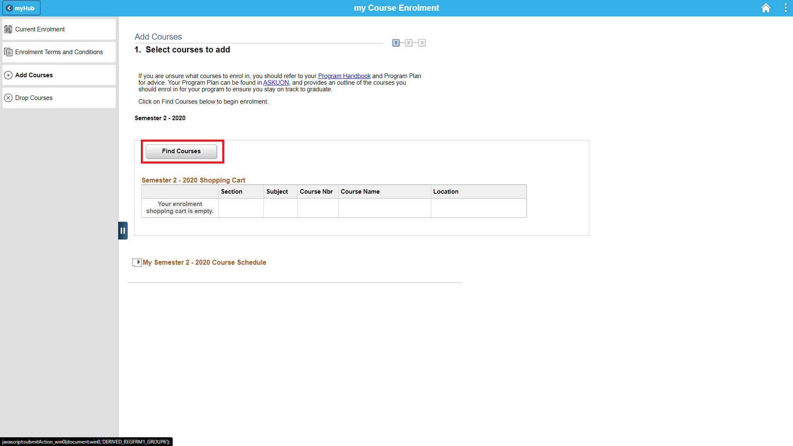
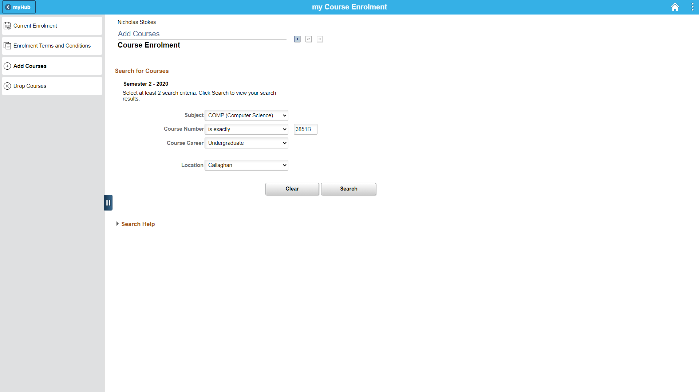

Orientation
Getting Started

Setting Up for University
Descriptive guide to get you set up with your university account & software and also learn about the key facilities on offer.

Choosing Courses
Want to know how to choose your courses? Here is a detailed guide on how to choose your courses and plan ahead!
Choosing Courses
Firstly, find your degree (UoN) and then navigate to the Program Handbook for your enrolled program. In this an example, we are looking for Bachelor of Information Technology.  Before enrolling check the plan for your program and the commencing semester and year. In this example we are looking to commence in semester 1 2020.
In the program plan, you can see the courses you are supposed to take relative to the semester. As an example, outlined below is the courses you have to take semester 1 of Bachelor of I.T.
To view specific information about the course, you can either click on the course links in the plan or take a look at this Course Handbook (UoN) to find out information for each course.
Notice you may not have all the courses filled in. That is because you have to choose certain courses depending on your program requirements or your preferred interests. These could be Major Compulsory, Directed or Elective courses. Refer to the Program Plan to see the unit requirements and courses you can take to fill in the gaps in your plan.
Once you have figured out the courses you need to take in the semester you intend to enrol in. UoN has a handy course timetable tool (UoN) which you can use to find times for your lectures and labs for your courses.

It is recommended that you choose at least 2 lab times as they can fill up fast. Note down the times in your weekly planner.

When enrolment opens you will be able to enrol online through myHub. Follow this enrolment guide (UoN) for assistance.
Enrolling
So you have chosen your courses? Here is how to start your enrollment into them.
Enrolling
Firstly, have a list of the courses you wish to enrol in handy, then go to myHub. Once there click on the Course Enrolment card shown here:  Once in the my Course Enrolment page click the "Add Courses" tab on the left of the page.
click on the Find Courses button to take you through to the next page.
Make sure you enter all of the information for the courses you want to enrol in, this is where having a list of your courses written down comes in handy.
the easiest way to search for courses is to have the exact course ID and input that into the fields, making sure that you choose the correct campus you wish to study at. You don't want to enrol in the wrong campus and miss out on your prefered class alocation times later on. An example of course searching is found below:
Once you have input the course information and clicked search there should be a list of one or more courses, again make sure that you have the correct campus location when selecting them. If there are no results check whether the course is available in Semester 1 or Semester 2 on the course page, if you have the correct semester you may have input the wrong code double check. If you are still having problems seek further help from: AskUON, Student Central, or email the Student Progress Advice team. Click on the correct course and location as in the example below:

Complete the first steps up until here with will your courses. Once you have done this wait for around 30 minutes and then proceed to myUON on either the mobile app or desktop. and click on the "myTimetable" card.

On this page you should see a list of your enrolled courses with either "Not Allocated" or "Pending" next to them, make sure you go through and select your prefered date and time with each class that is labeled "Not Allocated"
avoiding any clashes where possible.
 If your classes are not shown in the enrolment section try waiting another 10 or so minutes, if they still don't show check your myhub and see if you are enrolled in them there. If there is nothing
seemingly wrong with your enrollment on myHub seek futher assistance from AskUON, Student Central, or email the Student Progress Advice team.
With that all you have to do now is wait until your classes are allocated!
If your classes are not shown in the enrolment section try waiting another 10 or so minutes, if they still don't show check your myhub and see if you are enrolled in them there. If there is nothing
seemingly wrong with your enrollment on myHub seek futher assistance from AskUON, Student Central, or email the Student Progress Advice team.
With that all you have to do now is wait until your classes are allocated!

Semester Calender
This guide provides a chronological breakdown summary of first years students semester events and activities.